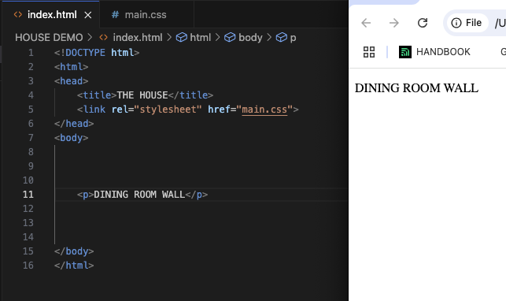

Javascript fundamentals
Hey so you’ve decided to start learning to code and you're working your way towards becoming a full stack developer, congratulations you have chosen to embark on a long and never ending journey of learning and exploration.
Learning to code is an empowering journey , but often it can be very overwhelming as there is so much to learn, you can feel bogged down by the amount of information available to you, and the technicality of coding can be daunting, but I promise that as you slowly begin to grasp concepts, things will all fall into place.
I am going to explain for you a few basic ideas but very fundamental ideas that will help you through your journey.
Javascript and its relationship to CSS and HTML
Let’s start with the language Javascript, not to be confused with java. Javascript is a very powerful tool, it acts as the brains of the operation, letting us store information
Let’s say that you, the developer, are the planner for a new house (our website or app) to be built for a client. You need these three languages to work with each other to create their dream house.
HTML is like the foundational plan for the house, it contains the walls, floors and basic layout, it holds everything together, and it’s directions are given or called to for different labourers with different skills sets are called to, for example let’s take this P tag inside of the html document that reads “Dining room wall”. The blueprint for the house calls for a dining room wall to be inside the house, we have given it the ID of feature wall, as the client has asked for it to be painted a ghastly shrek green.
The HTML document calls on the ID for feature wall and searches within the CSS file for feature wall ID, here it can see the colour provided (shrek green) and apply it accordingly.
Javascript is the brains of the operation, the electronics in the house, the appliances, smoke alarms and lightswitches. Our client wants to add a light for the feature wall so they can see it better, we see the instructions for the lightswitch in the html blueprint
And then in our javascript file we write a function that looks for the ID “lights” that when the lightswitch is clicked, we know to turn the lights on and change the color to yellow”.
The analogy for a house when describing these three languages is pretty common but I found it basic and helpful enough to grasp the basics. To summarise, HTML by itself is plain and boring with little functionality, CSS gives instructions on decoration and placement, and javascript gives our instructions for functional things. This is the basic way that these three powerhouses work together, later you will learn that they can be called in differing orders, but for now this analogy works to better solidify your comprehension of their collaboration.
Flow and loops in javascript
Flow in javascript describes the order and logic that functions follow. Loops are a piece/s of code that repeat depending if different conditions are/’nt met. We will use the example of driving your car.
Your’e driving to campus and there are a few traffic lights along the way that you need to stop at if red, or else continue if green. So we’ve written a snippet of code as a while loop that first checks what color the lights are, then gives instructions on whether to stop or start. The ELSE part of the statement cannot run UNLESS the IF statements conditions are not met. This code runs linearly in this example from top to bottom, and you could add other conditions to this flow to further detail your driving plan. Such as adding an if statement for finding a park, so you know when to finish the journey.
The DOM and how we interact with it
The DOM stands for the Document Object Model. Every tag in an HTML document is represented in the DOM as a node, and attributes like class and id provide ways to uniquely identify or group these elements for targeting. CSS provides the appearance and styling of the document, allowing developers to target elements either by grouping them with classes or by using unique IDs for individual elements.
The DOM is the goo that holds everything together. It organizes and simplifies the document by arranging its individual elements into a tree-like structure of nodes. In the visual examples provided, this tree structure helps us see how nodes (elements, attributes, and text) are connected. These nodes can be selected and filtered through the console in the browser's developer tools. Every element, attribute, and text has an object representation in the DOM, allowing developers to modify and interact with them using JavaScript. For instance, you can dynamically change the content of a paragraph or adjust the style of an element. This interaction can happen locally in the browser, and events triggered by users (like clicks) can be handled immediately before updates are sent to the server.
The DOM acts as the brains we have access to. It allows us to manipulate, create, and explore creative ideas to provide users with interesting and interactive experiences within the document. The concept of the DOM started as early as 1996 (the year I was born) with efforts by Netscape and Microsoft. Over the years, it has evolved into a highly sophisticated tool for web manipulation. The built-in functionality it provides today offers so much flexibility, and I can only imagine how manual and challenging this process must have been in the past.
The DOM works with several implemented APIs that have been added and improved over the years. For example, the SVG API allows developers to create scalable, non-destructive graphics. With the DOM, JavaScript can also handle events like user inputs through various devices. The types of events available depend on the device's capabilities. For instance, phones often don't support the :hover event, while modern laptops may support pressure-sensitive events through the trackpad. These APIs and event handlers allow for local interactions, reducing the need for constant communication with a remote server. When you open a webpage, the DOM is loaded locally in your browser, making it possible to handle user interactions directly within the loaded page.
Another useful feature of the DOM is its ability to navigate and select groups of elements, such as all elements that share the same CSS class. This means you can dynamically update styles or content for multiple elements at once without editing the uploaded or local .css file üòÆ. If we use our lightswitch example again, you could make all elements with a class of button turn red when clicked. CSS itself applies styles to the webpage by referencing the DOM's hierarchical structure‚Äîwithout the DOM, CSS would have no way to map styles to elements in the document, in other words it would be bloody useless.
Arrays and Objects
Essentially arrays and objects are similar because they both store a series of information like a basket, An array has items that maintain a uniform order, for example [A,B,C,D,E], all the items in the array are the same format and because of this can be accessed simply using numerical order. So The Value [A] in the array can be called by referencing the number “0” (this is because in coding we start counting from 0 so it is the first item in the array. If we wanted to call [E] from the array we would reference it with the number “4”.
An object differs in that the information contained can have different formats, they could be numbers, values, percentages, strings and so on. To call on the different things inside of an object we use a KEY, each element inside the object has a unique key name assigned to it that we can call on. Unlike arrays we cannot call on parts of the object using a numerical value, because the contents aren't always going to be the same.
Functions and why they are useful
A function in javascript are the instructions on how to do something, we use a function earlier in the lightswitch example to turn the lights of the house on and off, now let's say we want to add lightswitches to the other rooms of the house, instead of having to rewire everything again and rewrite the instructions out of how to do this, we can reuse and recycle the same functions over and over again, we can even utilise them on different elements. This saves us a lot of time and helps to create some structure and reusability in our code.